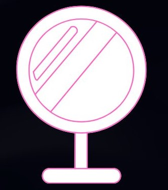

02
Two Metaphysics Theories
Property Dualism
According to EBSCO, property dualism is a philosophical theory which argues that the body, including the brain, is physical, but the mind is composed of mental properties. Property dualists
believe that although the brain consists of physical matter, it can produce both physical properties like neurons and mental properties like consciousness.
Think of Property Dualism like a Vinyl Record Playing on a Turntable
Like our brain, a vinyl record is entirely physical; it is made from plastic and etched with grooves. However, when played, it produces non-physical experiences: thoughts and emotions. The lyrics, rhythm, and melody
are not physically present in the same way as the record itself, but their interaction is what makes the experience meaningful. This everyday object symbolizes the relationship between physical and mental properties, highlighting
how these two aspects of reality are not separate, but deeply interconnected.

Materialism
According to Britannica, materialism is the philosophical theory that all facts (including those about the human mind, free will, and history) are ultimately dependent on physical processes.
In other words, everything that exists can be explained through matter and physical interactions. This idea can be traced back to early Greek philosophers more than 2000 years ago. They believed
that the universe is composed entirely of material substance.
Think of Materialism like a Thermostat
A thermostat appears to "sense" a room's temperature and "decide" when to turn the heating on. However, the truth is, its operation is entirely physical: a bimetallic strip expands and contracts with temperature, and at a set point, it closes an electrical circuit.
No feeling or decision is involved; it is solely predictable interactions governed by physics and chemistry. This everyday object illustrates how mental activity is the result of physical processes, suggesting that
mental properties are dependent on the physical world.

✦
Catholic Perspective
From Genesis 1:27, Imago Dei refers to the spiritual part of humanity. This theological concept has caused Catholics to view a human as a participant in two dimensions of reality: physical
and mental/spiritual. Physical refers to the human body that exists in the physical world, while mental/spiritual refers to human intellect and will, reflecting God.
Think of Imago Dei like a Mirror
A mirror does not become the object it reflects; it simply reveals its image. Similarly, humans are not God, but they reflect aspects of the divine nature like compassion, morality, and resilience.
This everyday object showcases how a human's character is influenced by both the physical and spiritual world.

03 — The Truman Show
A World Built
for One Man
Directed by Peter Weir and starring Jim Carrey, The Truman Show (1998) tells the story of Truman Burbank, a man who unknowingly lives his entire life inside a massive television set. His family, friends, town, and daily experiences
are all part of a reality TV show. So, everyone around him is an actor except for Truman himself.
"Good morning, and in case I don't see ya: good afternoon, good evening, and good night."
— Truman Burbank, The Truman Show (1998)
🏙️
The Physical World
Seahaven was built from physical elements, making it real to Truman. He experiences physical sensations like warmth, cold, joy, fear, showcasing how his brain produces physical stimuli. The matter is real despite the set being constructed.
🧠
The Mental Construction
The world was designed, scripted, and maintained by humans. The film director, Christof established Truman's storyline, intentionally tailoring it to appease viewers.
🚪
The Moment of Freedom
When Truman exits the set by walks through the door at the edge of the dome, he chooses subjective truth over physical comfort, affirming that consciousness and inner experience cannot be fully reduced to any physical matter.
04 — Philosophical Analysis
Why The Truman Show
Proves Reality Is Both
The Truman Show is not merely a metaphor for reality; it is a philosophical argument. Analyzed through the lens of materialism and property Dualism, the film demonstrates why neither theory alone can account for the full nature of what is real. Reality, the film insists, is irreducibly both physical and mental.
Argument 01 — The Materialist Reading Is Incomplete
A materialist would argue that Truman's reality is simply whatever his brain processes as physical input. Since he genuinely receives physical stimuli like light, sound, touch, warmth, his reality is real by definition. The origin of those stimuli is irrelevant.
Argument 02 — Property Dualism Explains Truman's Inner Life
Property dualism highlights the film's deepest tension. Truman's brain is a physical object; neurons firing in response to physical stimuli. However his growing sense of unease, his love for Sylvia, his existential dread when he realizes the sun follows are all mental properties that have no correlation to his neural activity.
Argument 03 — Imago Dei Analysis
Following Imago Dei, a Catholic would argue that Truman's ability to think critically, question his environment, and choose to leave the artificial world demonstrates his embodiment of
mental and spiritual qualities within this theological concept.
✦
As a viewer, our instinct is that Truman deserves freedom is itself a metaphysical claim about the irreducibility of the inner life. If reality were purely physical, then a perfect simulation would be indistinguishable from "real" experience and Truman would have no legitimate complaint. The fact that we feel, viscerally, that he has been wronged, suggests that we already believe, intuitively, in the reality and importance of the mental.
05 — Conclusion
Reality Is Both
Having examined property dualism, materialism and the philosophical argument embedded in The Truman Show, we arrive at a position that neither pure Materialism nor any form of idealism can fully sustain: reality is both physical and mental.
The Physical Dimension
Matter is real. Truman's world has physical weight. Science explains a vast amount of what exists through physical laws. The brain is a physical organ, and mind depends on it. Materialism is not wrong; it is incomplete.
The Mental Dimension
Consciousness is real. The first-person experience of being alive — of seeing, feeling, choosing — cannot be fully captured by any physical description. Property Dualism honors this irreducible dimension of existence.
What Truman Shows Us
Truman's world is physically real and mentally constructed simultaneously. His liberation is a victory of consciousness over physical constraint. Reality, like Truman, cannot be reduced to either matter or mind alone.
The Philosophical Answer
The question "is reality physical, mental, or both?" may not have a final answer. But the evidence from philosophy and film converges on the same tentative conclusion: it is both, and the relationship between them remains the deepest mystery in philosophy.
✦
06 — Works Cited
Works Cited
MLA 9th Edition Format
- Calef, Scott. Dualism and MindInternet Encyclopedia of Philosophy, Ohio Wesleyan University, 2002.
Accessed 15 March 2026.
- beloved1@aol.com. IN the IMAGE and LIKENESS of GOD IMAGO DEIStillromancatholicafteralltheseyears.com, 21 Oct, 2021.
Accessed 15 March 2026.
- Chalmers, David J. The Conscious Mind: In Search of a Fundamental Theory. Oxford University Press, 1996.
Accessed 15 March 2026.
- Churchland, Patricia S. Neurophilosophy: Toward a Unified Science of the Mind-Brain. MIT Press, 1986.
Accessed 15 March 2026.
- Dennett, Daniel C. Consciousness Explained. Little, Brown and Company, 1991.
Accessed 15 March 2026.
- Fu, Adrienne. MaterialismThe Decision Lab, 2021.
Accessed 15 March 2026.
- Hobbes, Thomas. Leviathan. 1651. Edited by C.B. Macpherson, Penguin Classics, 1985.
Accessed 15 March 2026.
- Jackson, Frank. "Epiphenomenal Qualia." The Philosophical Quarterly, vol. 32, no. 127, 1982, pp. 127–136.
Accessed 15 March 2026.
- Nagel, Thomas. "What Is It Like to Be a Bat?" The Philosophical Review, vol. 83, no. 4, 1974, pp. 435–450.
Accessed 15 March 2026.
- Plato. The Republic. Translated by Desmond Lee, Penguin Classics, 2007.
Accessed 15 March 2026.
- Smart, John Jamieson Carswell. Materialism | Philosophy. Encyclopedia Britannica, 28 Apr. 2016.
Accessed 15 March 2026.
- Weir, Peter, director. The Truman Show. Paramount Pictures, 1998.
Accessed 15 March 2026.
- Descartes, René. Meditations on First Philosophy. 1641. Translated by John Cottingham, Cambridge University Press, 1996.
Accessed 15 March 2026.